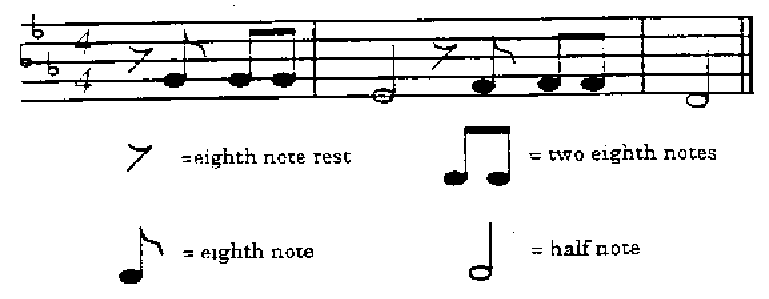

Lab 6: Sounds and Sampling
Preamble
Other formats
This document is available in HTML format for online viewing and as PDF for printing.
Acknowledgement
This lab has been adapted from Audio Processing with Matlab: An Introduction by Rachel Hager from the Electrical and Computer Engineering Department at Iowa State University and Elementary Music Synthesis by Professor Virginia Stonick of Oregon State University.
Aims
This lab is an introduction to signal processing with Matlab. It will help to familiarize you with some of the main functions to read in and play sound files in MATLAB. It also looks at the ideas of aliasing and anti-aliasing filters that is key to the successful conversion from continuous to discrete time signals and systems. It is therefore an opportunity to try some basic digital signal processing.
We also look at a one application of digital signals processing which is simple sound synthesis.
Preparation
Download and run the linked script to familiarise yourself with the basic tools that Matlab provides for manipulating and visualizing audio files. You will need to download a sound file and store it in the same folder then edit the script so that it loads your file. Music might be best for this initial exercise but you can use any audio file.
You will need headphones to hear the sounds without disturbing others in class.
Sound Samples (web link)
The web link above points to a source of sound samples. Choose one of these or find some other files from the internet. I downloaded and used the file Music (Vocals) Example 2 from this page in my example script.
Lab Exercise 12: Playing With Sound (2 marks)
Before starting this lab, create a new Livescript File and save it as ex12.
The LiveScript will open with a code cell highlighted.
Copy the first instruction below into the LiveScript code cell.
Press the run section button to execute the code.
Using section breaks between code cells.
Use run section or run section and advance buttons to step through the code.
Allow each sound sample played in a section to complete before exercuting the next section that plays a sound sample.
Use the text button to add commentary and your observations to your Live Script.
Use the text style features to add a title to your Live Script and section headings as appropriate.
Part 1: Read and Store an Audio File in Matlab
To read and store an audio file, you can use one of two different commands. The following stores the file into variable x.
x = audioread('filename');
Unless the audio file is in the same folder as the script, you will need to include the entire filename including the directory.
Example: C:\My Documents\EG-247-Lab\portfolio\lab9\Audio.wav
The command below stores the audio file into variable x and the sampling frequency in variable Fs.
[x,Fs] = audioread('filename');
Part 2: Play the Audio File
To play an audio file in Matlab you use the sound() function. The following function plays the sound. If the Fs variable is not defined or included in the command, it will assume the default sample rate of 8192 Hz.
sound(x,Fs);
In the PC lab, the speakers may have been disabled. But even if they are not, it will probably be best if you use head phones with either a standard 3.5 mm phone socket or USB connection to hear the sounds.
Part 3: Audio Scaling
To scale an audio file the sound() command is used. This allows for the modification of an audio signal’s amplitude or frequency.
sound(x,Fs);
To increase the volume of the audio track you can multiply the variable it is stored in by a scalar. To slow down or speed up the track played you can adjust the sampling rate. Comment on your observations using different values.
Now experiment with different bit values (8,16,24) in the following command:
sound(x,Fs,bits);
Comment on your observations.
Part 4: Playing a Sound Backwards
The command to reverse the order of the samples in a matrix is flipud(). Experiment with this command.
Record your experiments in this part of the lab by saving your Live Script file. Include your thoughts and observations as text elements.
Lab Exercise 13: Aliasing and anti-aliasing
Download the example file eg-247-message.wav that was recorded in the lecture using the file sampling_demo.m (If you have access to a microphone you can use sampling_demo to record your own sound file.)
Part 5: Aliasing
Download the file ex13_1.m and open as a LiveScript. Read the script then run it. Complete the remaining examples of “decimation” (effectively aliasing) and listen carefully to the results. Comment on what you hear.
Examine the frequency sprctrum data produced by the Fast-Fourier Transform (FFT). Discuss the results.
Part 6: Sampling with anti-aliasing filters
Download the file ex13_2.m and open as a LiveScript. Read the script then run it. Complete the remaining examples of “resampling” (effectively sampling with anti-alias pre-filtering) and listen carefully to the results. Comment on what you hear.
Examine the frequency sprctrum data produced for the sampled signals with pre-filtering. Discuss the results.
Minproject 3: Composing Music in MATLAB (1 mark)
Background
In this lab exercise, we explore how to use simple tones to compose a segment of music. By using tones of various frequencies, you will construct the first few bars of Beethoven’s famous piece Symphony No. 5 in C-Minor.
IMPORTANT: Each musical note can be simply represented by a sinusoid whose frequency depends on the note pitch. Assume a sampling rate of 8KHz and that an eighth note = 0.125s (1000 samples).
Musical notes are arranged in groups of twelve notes called octaves. The notes that we’ll be using for Beethoven’s Fifth are in the octave containing frequencies from 220 Hz to 440 Hz. The twelve notes in each octave are logarithmically spaced in frequency, with each note being of a frequency 21/12 times the frequency of the note of lower frequency. Thus, a 1-octave pitch shift corresponds to a doubling of the frequencies of the notes in the original octave. Table 1 shows the ordering of notes in the octave to be used to synthesize the opening of Beethoven’s fifth, as well as the fundamental frequencies for these notes. Note the notes without subscripts, correspond to the white keys on a piano. The notes with subscripts - called respective sharp (♯) and flat (♭) - represent the black keys.
Table 1: Notes in the 220-440 Hz Octave
| Number | Note | Frequency (Hz) | Actual frequency (Hz) |
|---|---|---|---|
| 1 | A | 220 | 220 |
| 2 | A♯,B♭ | 220 * 21/12 | |
| 3 | B | 220 * 22/12 | |
| 4 | Middle C | 220 * 23/12 | |
| 5 | C♯,D♭ | 220 * 24/12 | |
| 6 | D | 220 * 25/12 | |
| 7 | D♯,E♭ | 220 * 26/12 | |
| 8 | E | 220 * 27/12 | |
| 9 | F | 220 * 28/12 | |
| 10 | F♯,G♭ | 220 * 29/12 | |
| 11 | G | 220 * 210/12</td><td> | |
| 12 | G♯,A♭ | 220 * 211/12 |
You should copy this table into your OneNote notebook page for this lab and use MATLAB or a calculator to complete the table entries.
A musical score is essentially a plot of frequencies (notes, on the vertical scale for you musician types) versus time (measures, on the horizontal scale). The musical sequence of notes to the piece you will synthesize is given in Figure 1. The following discussion identifies how musical scores can be mapped to tones of specific pitch and duration.
Note Frequency
In the simplest case, each note may be represented by a burst of a sinusoid followed by a shorter period of silence (a pause). The pauses allow us to distinguish between separate notes of the same pitch. The horizontal lines in Figure 1 represent the notes E, G, B, D, F from the bottom to the top. The spaces between the lines are used to represent the notes F, A, C, and E, again from the bottom to the top. Note that A-G only yields seven notes; the additional notes are due to changes in pitch called sharps (denoted by the symbol ♯) or flats (denoted by the symbol ♭) that follows a given note. A sharp increases the pitch by 21/12 and flat decreases the pitch by 21/12.
 Figure 1: Musical Score for Beethoven’s Fifth
In the musical score in Figure 1, the first three eighth notes are all note G. The first half note is an E♭ due to the inclusion of the three flat symbols at the left of the score, since we are in the key of C-minor. After the half note, the symbol is a rest of length equal to the duration of an eighth note. The next three eighth notes are all F, and the final half note is a D. You can get the fundamental frequencies for these notes from Table 1.
Note Durations
The duration of each note burst is determined by whether the note is a whole note, half note, quarter note, eight note, etc. Obviously, a quarter note has twice the duration of an eighth note, and so on. So your half notes should be four times the duration of your eighth notes. The short pause you use to follow each note should be of the same duration regardless of the length of the note.
Creating Music in Matlab
This section of the lab will teach you how to create music using different tones created in Matlab.
First we are going to code a sine wave of amplitude A = 1, at an audio frequency of 220 * 7/12 Hz (which corresponds to E♭) which plays for an eighth note (0.125 seconds).
Fs = 8000;
Ts = 1/Fs;
Eflat = sin(2*pi*220 * 2^(6/12) .*[0:Ts:0.125]);
sound(Eflat);
This vector Eflat now contains samples of the sine wave from t = 0s to t = 0.125s, in samples that are spaced Ts seconds apart. Note that this sampling interval corresponds to a sampling frequency of 8 kHz (1/Ts = fs) and Ts will be 0.125 ms. This is standard for voice grade audio channels.
To create a pause use the zeros function:
pause = zeros(1,length(0:Ts:time));
For example to create an eighth note pause at the start of the tune:
pause8th = zeros(1,length(0:Ts:0.125));
Now to write this pause and first note sound to a sound file we use the following command:
audiowrite('first_note.wav',[pause8th,Eflat],Fs);
To play the sound, use the sound() function.
Now you can complete the opening phrase of Beethoven’s fifth by adding additional notes and pauses of the correct length.
Save the commands you use to create, play and save your version of Beethoven’s Fifth in a MATLAB mlx-file as beethoven.mlx and add this to your copy of this lab script along with the sound file.
What to turn in
You should attach all the scripts and audio files created or downloaded for this exercise to the OneNote submission page for this exercise, complete the claim form and turn-in your assignment through Teams.
Claim
Up to 2 marks each can be claimed for Exercises 12 and 13. There is 1 additional mark for Miniproject 3.
See Assessment and Feedback: Labwork Assessment for a detailed marking scheme.
The deadline for claims and submission is Midnight, 29th March.
- If you fork my repo, you should add my master repository to your upstream so that you can regularly pull and merge my updates. There’s still a lot of files to be added! This GitHub help file explains the procedure you would need to follow.